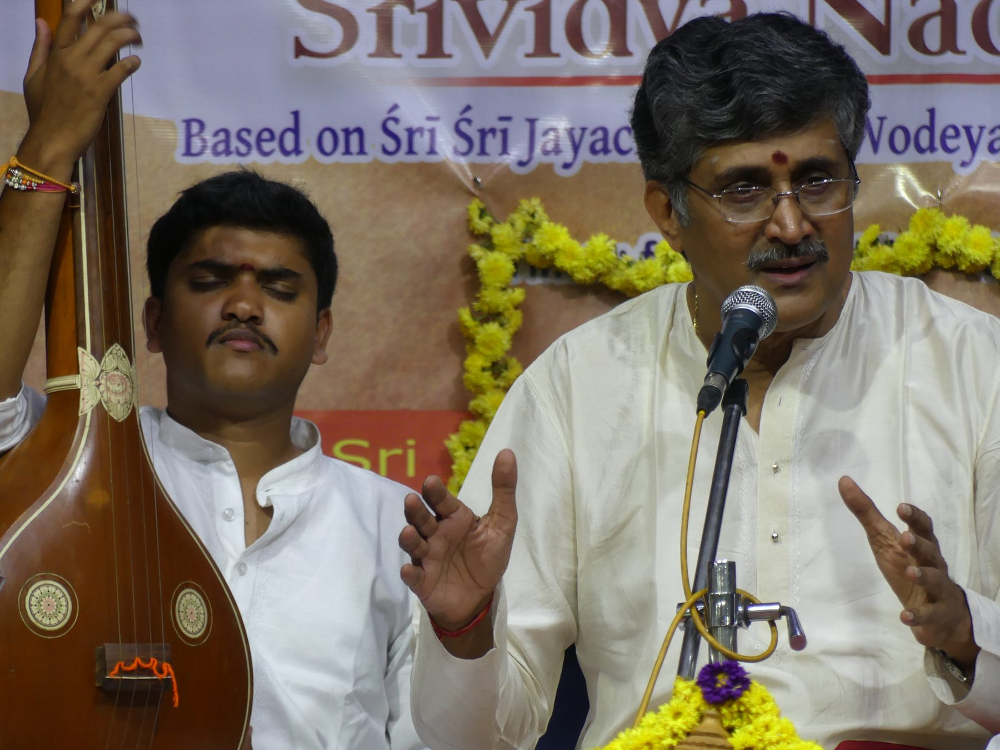
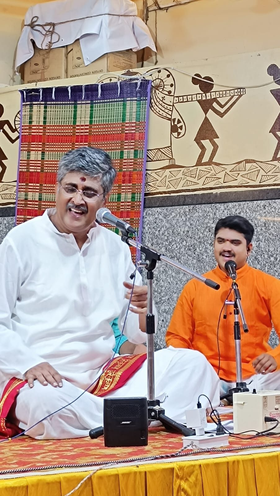
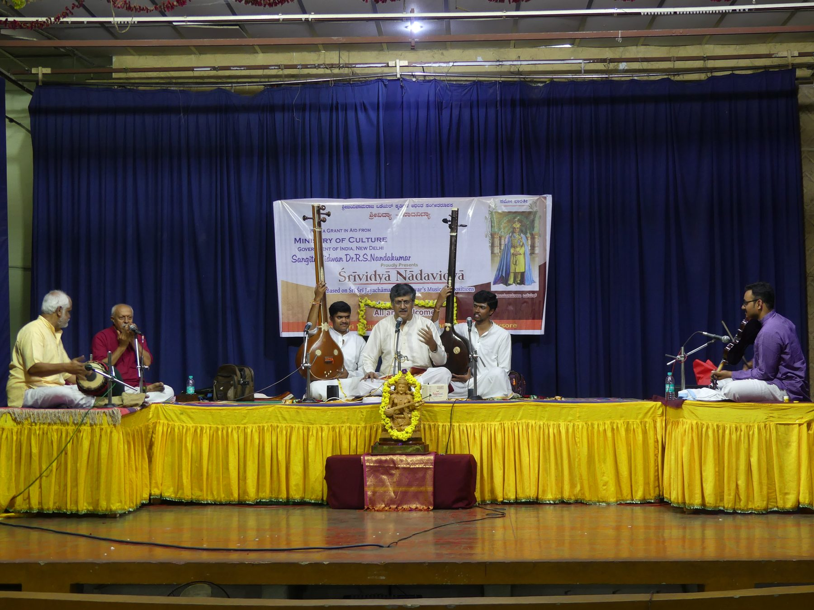
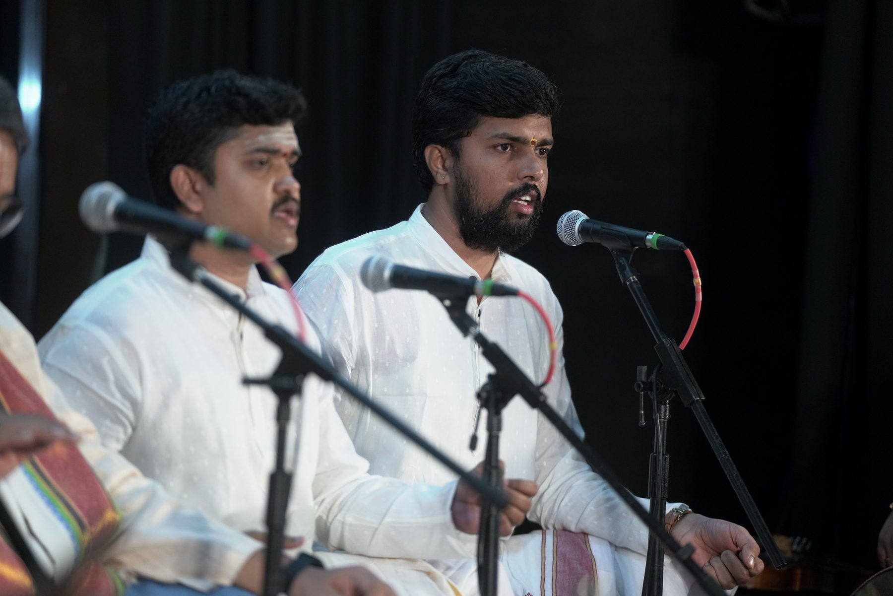

The first teacher
Smt. Kaveramma
ಶ್ರೀಮತಿ ಕಾವೇರಮ್ಮGrandmother
From the age of five she taught him the Srimad Bhagavadgita, Samskrutha shlokas and the Soundaryalahari. Her teaching gave him the habit of clear diction and the love of the sacred word.
A lamp is lit from a lamp. These are the teachers whose flames he carries.

In the Gurukula system a student does not only take lessons. He sits beside the guru on stage, holds the shruthi, sings along when needed, listens to every choice the guru makes and slowly absorbs a whole way of thinking about music.
Kousthubh has chosen this old and disciplined path. Holding the tambura for his guru in concert after concert, he has learned what no classroom can teach: how a raga unfolds in front of a living audience.
Grandmother
From the age of five she taught him the Srimad Bhagavadgita, Samskrutha shlokas and the Soundaryalahari. Her teaching gave him the habit of clear diction and the love of the sacred word.
Vedic studies
Under him Kousthubh studied the Vedas, learning svara, rhythm and the discipline of oral tradition.
Junior and Senior grades
His foundational music education was completed under her. It led to a first class in the Junior grade and the first rank in the Senior grade examination of the Government of Karnataka.
Eminent musician and musicologist
India's eminent musician and musicologist. Under his guidance Kousthubh completed his M.A. in Music with an A+ grade (2024). He accompanies his guru in all his concerts, providing shruthi and vocal support, and continues to learn from him in the Gurukula way. rsnandakumar.in
Adhyatma Prakashana Karyalaya
He is currently learning bhajans and philosophical compositions such as the Adhyatma Geethavali of the Adhyatma Prakashana Karyalaya of His Holiness Sri Sacchidanandendra Saraswathi Swami.


